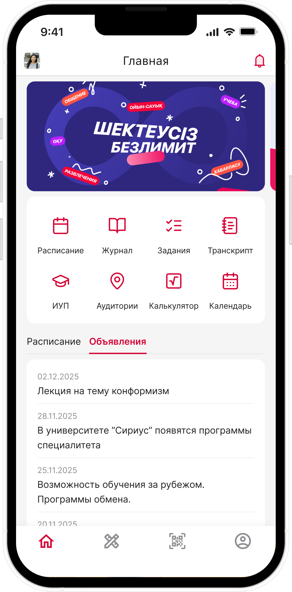

С чего я начал
Platonus — система, в которой университеты Казахстана ведут учебный процесс. В мобильном приложении студенты смотрят расписание и оценки, сдают задания и заказывают справки.
Я перерабатывал приложение модуль за модулем. Всего их 16, и все уже вышли в релиз. Начал с главного экрана, потому что с него начинается каждый заход в приложение.
В обратной связи студенты писали, что модули расположены неудобно. Это было видно и по самому меню: первым шёл Академический календарь, Расписание пряталось во втором ряду, а рядом стояли сокращения вроде ЦОО и ИУП.
Если вынести на главный экран самые нужные модули, то это облегчит пользовательский путь.
Зачем студенты открывают приложение
Сначала я провёл подробные интервью: по одному студенту из каждого из четырёх университетов. Спрашивал не про интерфейс, а про обычный учебный день: в какой момент они открывают Platonus, что ищут первым делом и что их раздражает.
Из разговоров я вывел четыре гипотезы и под каждую придумал решение для главного экрана:
Интервью подсказали направление, но не ответили на главный вопрос: какие именно модули важнее остальных. Для этого нужны были цифры.
Опрос: какие модули важнее
Я собрал опросник и отправил его студентам четырёх университетов-клиентов: ЕНУ имени Гумилёва, Astana International University, De Montfort University Kazakhstan и Медицинского университета Астана. Каждый оценил 16 модулей приложения по шкале от 1 до 5: насколько модуль нужен лично ему. Опрос прошёл в два захода в тех же университетах, всего ответили 83 студента.
- На главном экране
- Расписание4,73
- Журнал4,09
- Задания3,52
- Транскрипт3,00
- ИУП2,83
- Учебная аудитория2,51
- Академический календарь2,43
- Калькулятор журнала1,84
- В сервисах
- ЦОО1,78
- ЖТУ1,77
- Успеваемость1,62
- Анкеты1,50
- Клубы1,47
- Мероприятия1,47
- Общежитие1,33
- QR1,20
Понятные названия
Параллельно я переименовал модули. Часть названий была длинной или непонятной без расшифровки: чтобы заказать справку, нужно было знать, что это делается в ЦОО. Я оставлял одно-два слова, которые отвечают на вопрос «что я тут найду».
Новая главная
Раньше главная состояла из рекламного баннера и ленты объявлений, а все модули лежали в отдельном меню. Я пересобрал её вокруг того, что студенту нужно каждый день.
8 модулей в быстром доступе
Всего в приложении 16 модулей, и я выстроил их по приоритету. Первые 8 стоят на главном, остальные живут в сервисах, а QR я вынес в нижнее меню. В первом ряду Расписание, Журнал, Задания и Транскрипт, которые получили самые высокие оценки в опросе. Редкие модули никуда не делись, просто не занимают место каждый день.
QR в нижнем меню
Студенты отмечают присутствие в начале пары: преподаватель выводит QR-код на экран, и отсканировать его нужно сразу. Поэтому я перенёс QR в нижнее меню, откуда он открывается в одно касание с любого экрана. У QR самая низкая оценка из всех модулей, но здесь важнее скорость, чем частота: когда код нужен, его нельзя искать в сервисах.
Расписание на сегодня
Под модулями сразу идут пары на сегодня: время, предмет, корпус с аудиторией и группа. Открыл приложение и уже знаешь, куда идти, без перехода в отдельный модуль.
Объявления
Объявления никуда не делись, они переехали во вкладку рядом с расписанием. Раньше лента занимала всю главную, теперь не мешает, но открывается в одно касание.

Дизайн-система
До редизайна у Platonus не было ни дизайн-системы, ни даже UI-кита. Параллельно с модулями я собирал дизайн-систему на основе Ant Design Mobile, чтобы все 16 модулей выглядели и работали единообразно.
Проверка
Студенты обязаны пользоваться Platonus, поэтому охват и удержание не покажут, стало ли удобнее. Вместо продуктовых метрик я проверял решения на самих студентах.
Пока я рисовал макеты, я проводил коридорные тесты, и они подтверждали решения по ходу работы. Потом провёл юзабилити-тестирование: по одному студенту из каждого университета. Каждый получал задачи по модулям, например найти свой GPA или узнать, какие в университете есть студенческие клубы.
GPA лежит в Журнале на главной, а Клубы в сервисах, поэтому задачи проверяли и быстрый доступ, и поиск редких модулей. Клубы раньше назывались «Организации», так что заодно проверялось и новое название. Все четыре студента справились со всеми задачами.
Что получилось
- Все четыре студента на юзабилити-тесте справились с задачами: и с модулями на главной, и с модулями в сервисах.
- Все 16 модулей выстроены по приоритету: 8 самых нужных на главном, QR в нижнем меню, остальные в сервисах.
- Расписание на сегодня и объявления видны сразу при входе.
- Модули получили короткие понятные названия.
- У приложения появилась дизайн-система на основе Ant Design Mobile.
- Главная вышла в релиз вместе с остальными модулями редизайна.
Спасибо, что дочитали!